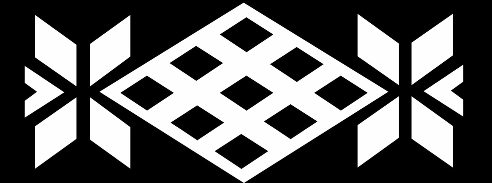

AhumadorSmoking vessel
Cocina y ahúma en un solo cuerpo de greda, sobre la llama de una cocina convencional. La invención que origina el estudio.Cooks and smokes in a single clay body, over a conventional stove flame. The invention that originates the studio.
Ahumar dentro de la cocina,
no fuera de ella.Smoking inside the kitchen,
not outside it.
Hasta este artefacto, ahumar exigía cámaras externas o esencias artificiales. El control vuelve al cocinero: intensidad, color y punto se regulan en el mismo objeto.Until this device, smoking required external chambers or artificial essences. Control returns to the cook: intensity, color and doneness are regulated in the same object.
Astillas de madera en la base, alimento sobre parrilla de acero, y una cámara de greda que concentra humo y calor en un solo gesto. La forma nace de una matriz geométrica de la iconografía mapuche —el rombo del Pichikemenküe— convertida en sección constructiva: dos cuerpos que calzan mediante una pestaña perimetral, sellando la cámara sin herrajes ni juntas sintéticas.Wood chips at the base, food on a steel grill, and a clay chamber that concentrates smoke and heat in a single gesture. The form is born from a geometric matrix of Mapuche iconography —the Pichikemenküe rhombus— turned into a constructive section: two bodies fitting through a perimeter flange, sealing the chamber without hardware or synthetic joints.

Rombo Pichikemenküe · iconografía mapuche · su proyección horizontal define la sección constructiva del AhumadorPichikemenküe rhombus · Mapuche iconography · its horizontal projection defines the smoking vessel's constructive section
La misma greda, dos estadosThe same clay, two states
El control vuelve
a manos del cocineroControl returns
to the cook's hands
Validado en las cocinas de una escuela profesional de gastronomía: control de temperatura por el orificio de la tapa y cocción directa a la llama. Las observaciones de ese ensayo definieron la parrilla de acero y el sistema de cierre definitivos.Validated in the kitchens of a professional culinary school: temperature control through the lid's opening and direct-flame cooking. The observations from that trial defined the final steel grill and closing system.
Una segunda validación en servicio real confirmó el aroma y el sabor ahumado en preparación directa al fuego, con un tamaño calificado como apropiado para cocina de servicio. La pieza no se probó en un laboratorio: se probó cocinando.A second validation in real service confirmed the smoked aroma and flavor in direct-fire preparation, with a size rated appropriate for service kitchens. The piece wasn't tested in a lab: it was tested by cooking.
La geometría que previene fisuras en la cocción es la misma que define el carácter del objeto. El nombre del estudio nace aquí: trufquén, ceniza en mapuzungun.The geometry that prevents cracking during firing is the same one that defines the object's character. The studio's name is born here: trufquén, ash in Mapuzungun.
Ficha técnicaTechnical sheet
- PiezaPiece
- Pieza 0 · 2014 · origen del estudioPiece 0 · 2014 · origin of the studio
- MaterialMaterial
- Greda de Pomaire. Verificada libre de plomo (ICP-OES).Pomaire clay. Verified lead-free (ICP-OES).
- GeometríaGeometry
- Matriz romboidal del Pichikemenküe, iconografía mapuche, llevada a sección constructiva.Rhomboid matrix of the Pichikemenküe, Mapuche iconography, taken to constructive section.
- ComponentesComponents
- Base, tapa con pestaña de calce, parrilla de acero, asas.Base, lid with fitting flange, steel grill, handles.
- TerminaciónFinish
- Bruñido con piedra de río o esmalte cerámico negro.Burnished with river stone or black ceramic glaze.
- DiseñoDesign
- Raúl Hernández TralmaRaúl Hernández Tralma
- AlfareríaPottery
- Rodrigo Veliz · Taller Barros, PomaireRodrigo Veliz · Taller Barros, Pomaire
- DimensionesDimensions
- Aprox. Ø 260 × 215 mm. Referenciales: la greda natural varía.Approx. Ø 260 × 215 mm. Referential: natural clay varies.
- Propiedad intelectualIntellectual property
- Invención registrada en INAPI, Chile.Invention registered with INAPI, Chile.